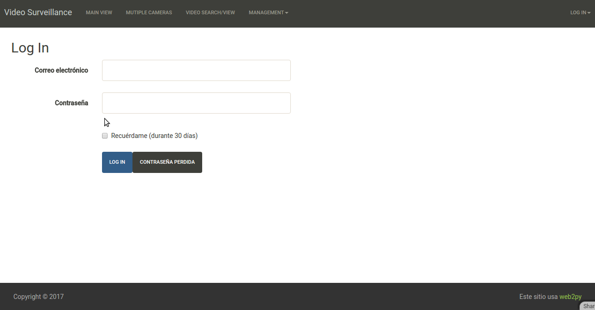

Manual de la aplicación Smart Security
Requerimientos
Para un funcionanmiento adecuado debe utilizarse Google Chrome como navegador .
Interfaz de Usuario
La interfaz gráfica de usuario fue desarrollada utilizando el fremwork Web2Py, el cual permite el desarrollo rápido de aplicacciones web con el lenguaje Python como base. Este framework utiliza el patrón arquitectónico Modelo Vista-Controlador (MVC) para el desarrollo de éste tipo de aplicaciones.
El prototipo actual del sistema de Smart Security ofrece cinco diferentes vistas al usuario: Login, Main, Multiple Cameras, Search and Management.
Registro de un usuario
La vista Login evita que usuarios no autorizados accesen al sistema bloqueando el resto de las vistas y los privilegios de gestión. Es por esto que antes de utilizar el sistema se requiere realizar un proceso de registro.
Para registrar un usuario nuevo:
-
Click en el menú
Login Iny seleccionar la opciónSign up(esquina superior derecha de la vistaLogin). -
En la vista
Logindebemos indicar el nombre de usuario y el password del usuario nuevo.

La información se envía al adminstrador del sistema para autorizar el acceso del usuario nuevo.
Inicio de sesión
Una vez que se cuenta con usuario registrado, es posible accesar al sistema utilizando la vista Login.
Para accesar al sistema:
-
Click en la opción
Loginy seleccionar la opciónLog in(esquina superior detecha de la vistaLogin). -
En la vista
Loginindicar el nombre y contraseña de usuario.
Grabación por movimiento
De manera predeterminada el sistema es capaz de grabar video por movimiento detectado en la escena.
Visualización de una cámara
Para visualizar una cámara en específico:
-
Click en la opción
Main. -
Cuando la vista
Maineste cargada, en la barra de desplazamiento inferior seleccionar la cámara deseada.

Visualización de los últimos eventos detectados (In progress).
Toda actividad detectada por el sistema es reportada y visualizada al usuario. Para ver un listado de las actividades detectadas:
-
Click en la opción
Main. -
Ir al cuadro de texto
Last Activity(lado derecho de la vistaMain).
Vizualización de varias cameras
Para un panorama general del área vigilada, el sistema es capaz de mostrar todas las cámaras registradas en la vista Multiple Cameras.
-
Click en la opción
Multiple Cameras. -
Todas las cámaras registradas estan visibles.

Búsqueda
El sistema permite al usuario buscar videos asociados con los eventos detectados. Dos criterios definen el tipo de búsqueda a relizar: por anotación o por imagen.

Busqueda por anotación (Filtros)
Esta opción de búsqueda contiene opciones para buscar por tipo de evento (Persona o vehicle detectado), por fecha de detección y/o por el id de la cámara de interes.
Para buscar videos por anotacion:
-
Click en the opción
Search. -
Seleccionar the botón de radio
Filters. -
En la vista
Search, definir los subcriterios de búsqueda. -
Event Type: Seleccionar el typo de evento que quieres buscar. Si ninguna opción se selecciona, se mostrarán todos los tipos de eventos. -
Camera id: Seleccionar el id de la cámara deseada. -
Date: El usuario puede definir un rango de fechas a través de de dos calendarios. -
Click en el botón
Filter Events. -
El resultado de la búsqueda es visualizado en el cuadro de texto inferior.
Búsqueda por imagen(Rostro)
Esta opción de búsqueda permite al usuario buscar a una persona por rostro.
Para buscar a una persona (por rostro) en el repositorio:
-
Click en la opción
Search. -
Seleccionar el botón de radio
Face. -
Click en botón
File. -
Seleccionar el archivo de imagen que contiene el rostro de la persona a buscar.
-
Una vez seleccionado el archivo, click en el botón
Filter Events. -
El resultado de la búsqueda es visualizado en el cuadro de texto inferior.
Configuración

Para configurar como el sistema resalta el evento detectado sobre el streaming de video:
-
Click en el menú
Management. -
Seleccionar la opción
Filters. -
En la sección
Configure Filters, seleccionar elEvent,Text tagandColordeseado para visualizar cuando el evento es detectado. -
Click en el botón
Submit.
Gestión de cámaras

Agregar una camera
-
Click en el menú
Management. -
Seleccionar la opción
Cameras. -
En la sección
Cameras Management, click en el botónAdd Camera. -
Indicar el
idde la nueva cámara. -
Indicar la
url(rtsp) de la cámara nueva. -
Click en el botón
Submit.